Setting Up Measurement Protocols
Measurement protocols are the main way in which CAMELS performs measurements. It can be understood as something similar to a measurement recipe where a step for step guide is given to different instruments to perform a measurement procedure.
A good example of such a measurement procedure is a temperature dependant current-voltage (IV) measurement. Here the temperature of a sample is set to a specific value with a PID controller and waits for the temperature to be stable. Then it performs an IV-sweep, so it sets a voltage and measures the accompanying current for a given range of voltage values (often something like 100 points between -1 V and +1V).
The temperature set-points are also set to values in a given range (for example from 295K to 320K in 25 steps).
So one would need to nest different loops (one for setting teh temperature and one for setting the voltage). This can be done quite using CAMELS.
1. Simple Start with a demo_device
But let’s start very simple with the demo_device which is a pure software implementation of an instrument.
Start by clicking the large ➕ symbol next to Measurement Protocols. This opens up and empty protocol window.
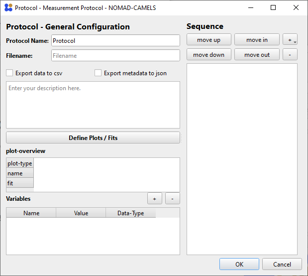
Here you can fully configure the measurement routine you want to perform. Give the protocol a custom name using Protocol Name. With Filename you set the name of data file that is created during the measurement. You can also add a custom description to describe what your measurement protocol does.
One key part of this window is the Sequence element on the left.
Here you will configure the individual steps of the measurement procedure.
Right click into the empty space to add a new step
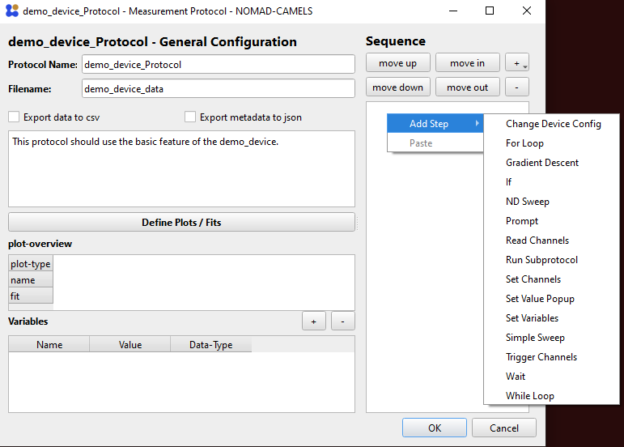{kind=link}
or use the small ➕ symbol in the top right to add a new step.
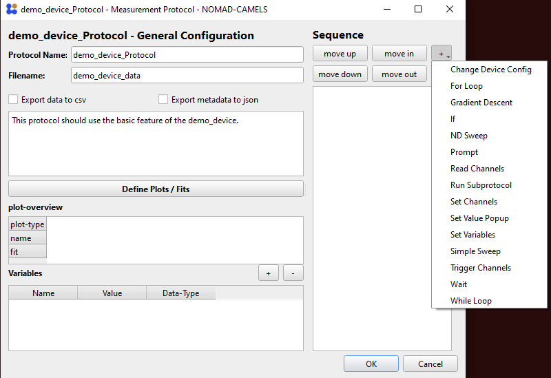{kind=link}
1.1. Add Set and Read Steps
We can now add two of the most important steps:
Set Channels
Read Channels

Each instrument has specific channels which can be read and set (changed) or only read.
Depending on the exact implementation of the instruments channels they are either ‘software channels’ so they themselves do not actually require communication with the actual instrument but store important values or settings, or they are instrument channels and either read from or write to the instrument (or both).
Below you can see the readable and the settable channels of the demo_device.
 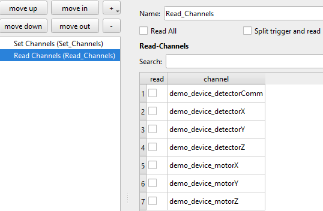
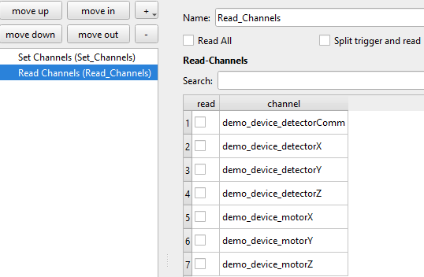
{kind=link}
2. Use Single Set and Read
Let’s see how you can set and read individual channels.
2.1. Set Channels
We can now configure the protocol so that first each motor channel (X,Y,Z) are set to a value (in this case 1,2,3).
{kind=link}
{kind=link}
The green background of the
valuefield tells you that CAMELS understands the entry as it expects to see a number (float) here.
⚠ If you enter a value which CAMELS can not convert to float it will change the background to red (see image on the right).
2.2. Use Variables
⚠ You can use variables instead of ‘hard-coding’ values.
⚠ You can use most symbolic math operations the same way you would in regular python code in the value field to perform calculations before setting the result of the calculation.
For this simply add a variable on the bottom right of the protocol screen with the ➕ symbol
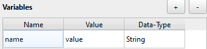{kind=link}

and change the Name and Value to what ever you need. The Data-Type will change depending on the value you input and can be used to make sure that CAMELS correctly ‘understands’ the value.
To use this variable in the protocol (here in Set Channels) right-click the value field and insert or append the desired variable you created.
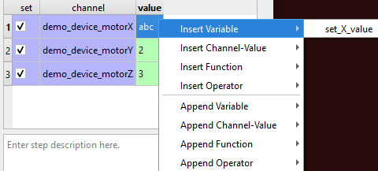
Insertwill overwrite any existing value in the fieldAppendwill add the string name of the variable at the end of the value field. This is useful when creating longer functions with multiple variables.
You can use math notation as you would in a normal pythons script (you can use np.* variables; like np.sin(1)) to perform calculations before setting the value:

This should evaluate to (1+1)*2=4. You can also insert or append
functions
operators
channel values
2.3. Read Channels
To read the channels we just set, configure the Read Channels step to read the three motor channels:
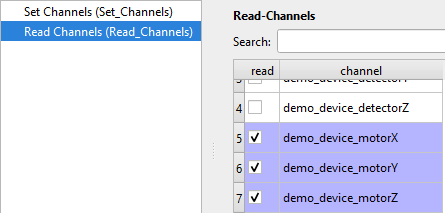
You can now run the protocol by confirming the configuration with OK and then pressing the run button.
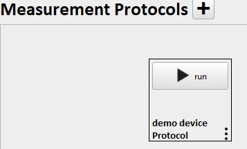
This should build the protocol (converts your recipe to a python script that uses Bluesky to orchestrate the measurement) and run it; resulting in information about the run in the log on the right side of the window.

This creates a HDF5 file in the location specified by the data saving location set in Settings and the user and sample name. This file contains all the read data and all the metadata known to CAMELS. With a simple HDF5 viewer like H5web you can easily read and display the data.
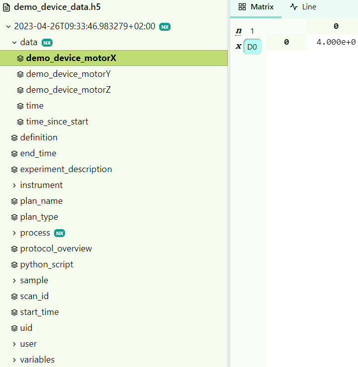
We can see that the motorX was set correctly to a value of 4.
3. Sweeping using a For loop step
Start by creating a new Protocol by clicking the large ➕ symbol next to Measurement Protocolsin the main window.
3.1. Create Steps
Create a For Loop step as the first step in the sequence.
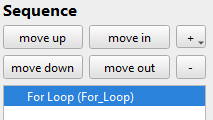
Right-click the For loopstep and click Add Into to add a Set Channel step into the for-loop. Steps within a for-loop are executed for each iteration of the loop.
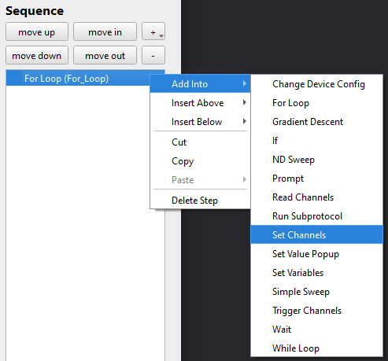
Then also add a Read Channel step by right-clicking the Set Channels step and using Insert Below.

3.2. Create Variables
⚠ This step is optional.
Add these variables to make it clearer what values are used in the For Loop. This also makes maintaining the protocol easier and enables you to more easily share it with others.

3.3. Set Channels (using variables)
Start by setting the start, stop and number of points of the For Loop. To do this either type the number you want into the field or you can use the variables created above to set these parameters. To use the variables right-click the field and select Insert Variable and then stop. Like this for example:

When you entered the three relevant parameters you should see a list of points appear on the right side showing you which value the points you created will have.
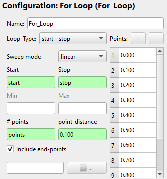
Now go to Set Channels and set the three motor channels of the demo_device to the value you want. For demonstration purposes we will set each channel to a function that uses either For_Loop_Count or For_Loop_Value. Where Count is the number of iteration of the for-loop; here for example it starts with 1 goes to 11, increasing by 1 for each iteration. This can be used to count and keep track of your iterations. Value is the value belonging to the iteration count; here it would go from 0 to 1 in steps of 0.2. The name of these two variables changes if you rename the For loop step to <name_for_loop>_Count and <name_for_loop>_Value.
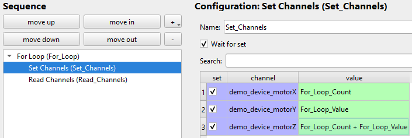
We set
motorXtoFor_Loop_CountmotorYtoFor_Loop_ValuemotorZtoFor_Loop_Count + For_Loop_Value
to demonstrate both of the variables and the use of mathematical operations (here +) in value fields.
3.4. Read Channels
Now set which channels should be read each time the loop is iterated over. If you like you can select Read All at the top to read all available channels. You could of course select individual channels if you want read fewer. Here we are only interested in the motor channels, so we will only read these.

3.5. Run Sweep Protocol
Now click OK and run the protocol.
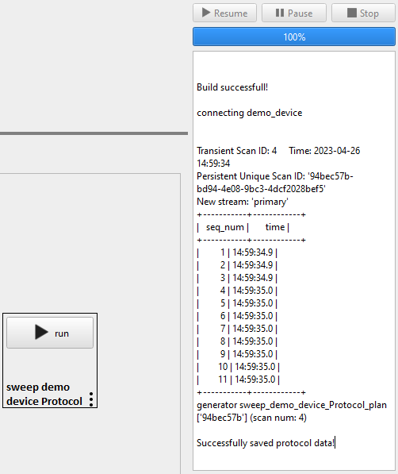
You can already see the eleven iterations the loop makes from the console window.
3.6. Sweep Data
Now lets look at the data produced. The HDF5 file with the data is saved into the location specified by you. With a simple HDF5 viewer like H5web you can easily read and display the data.

Here are the other two motor channels
 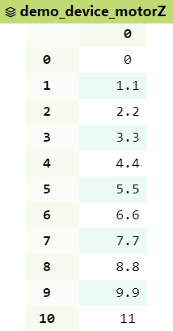
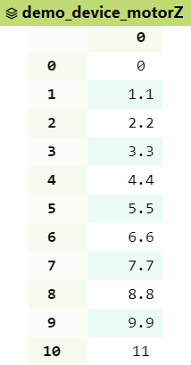
{kind=link}
We can see that the mathematical operation of adding Count and Value for motorZ worked.
4. Using the Simple Sweep functionality
If you want to sweep and set one channel (e.g. voltage) and read any number of other channels (e.g. current and temperature) you can either use a for-loop as described above or you can use the Simple Sweep functionality which is a ‘cleaner’ implementation of such a sweep.
4.1. Create Step
Start by creating a new Protocol by clicking the large ➕ symbol next to Measurement Protocolsin the main window. Add a Simple Sweep step into teh sequence.
4.2. Customize Simple Sweep
You can now configure the Simple Sweep. This is quite similar to configuring the For loop step above. But you musts first configure the Sweep Channel, so the channel that should be changed and set. We will use the motorX channel for this example.

Data Output configures in which Bluesky stream the sweep is run. sub-stream should be fine for most cases.
Select the Loop-Type and Sweep mode you want.
 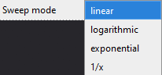
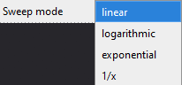
{kind=link}
Set the Start, Stop and points parameters. For this we can again use variables as done above. Then select which channels you want to read. We will only select the motorX channel. As this is the only channel that is changed.

4.3. Run Simple Sweep
Click OK and run the protocol.
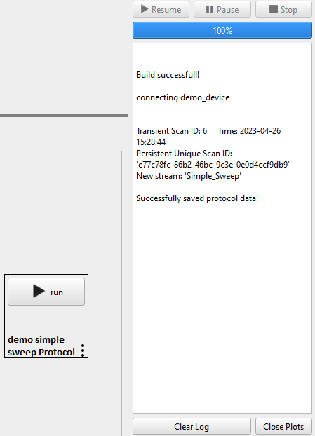\
4.4. Data File
Now lets look at the data produced. The HDF5 file with the data is saved into the location specified by you. With a simple HDF5 viewer like H5web you can easily read and display the data.
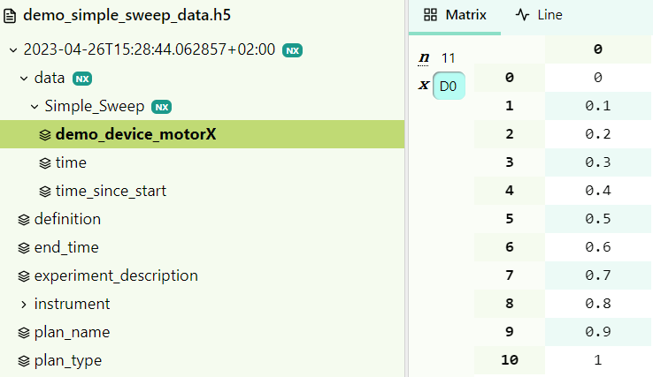{kind=link}
We can see that the set points of motorX are read successfully.